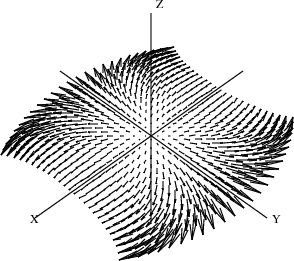

10.7 Drawing Complex Vector Fields¶
We now put our arrows to good use drawing complex vector fields. These vector fields give a representation of complex-valued functions of complex variables. Consider a Cartesian coordinate grid of points (x,y) in the plane, and some complex-valued function f defined on this grid. At every point on this grid, compute the value of f(x+iy) and call it z. Since z has both a real and imaginary value for a given (x,y) grid point, there are four dimensions to plot. What do we do? We represent the values of z by arrows planted at each grid point. Each arrow represents the value of z in polar coordinates (r,θ). The length of the arrow is proportional to r. Its direction is given by θ.
The code for drawing vector fields is in the file vectors.input. We discuss its contents from top to bottom.
Before showing you the code, we have two small matters to take care of. First, what if the function has large spikes, say, ones that go off to infinity? We define a variable clipValue for this purpose. When r exceeds the value of clipValue, then the value of clipValue is used instead of that for r. For convenience, we define a function clipFun(x) which uses clipValue to clip the value of x.
clipValue : DFLOAT := 6 Maximum value allowed
clipFun(x) == min(max(x,-clipValue),clipValue)
Notice that we identify clipValue as a small float but do not declare the type of the function clipFun. As it turns out, clipFun is called with a small float value. This declaration ensures that clipFun never does a conversion when it is called.
The second matter concerns the possible poles of a function, the actual points where the spikes have infinite values. FriCAS uses normal DoubleFloat arithmetic which does not directly handle infinite values. If your function has poles, you must adjust your step size to avoid landing directly on them (FriCAS calls error when asked to divide a value by 0, for example).
We set the variables realSteps and imagSteps to hold the number of steps taken in the real and imaginary directions, respectively. Most examples will have ranges centered around the origin. To avoid a pole at the origin, the number of points is taken to be odd.
realSteps: INT := 25 Number of real steps
imagSteps: INT := 25 Number of imaginary steps
)read arrows
Now define the function drawComplexVectorField to draw the arrows. It is good practice to declare the type of the main function in the file. This one declaration is usually sufficient to ensure that other lower-level functions are compiled with the correct types.
C := Complex DoubleFloat
S := Segment DoubleFloat
drawComplexVectorField: (C -> C, S, S) -> VIEW3D
The first argument is a function mapping complex small floats into complex small floats. The second and third arguments give the range of real and imaginary values as segments like a..b. The result is a three-dimensional viewport. Here is the full function definition:
drawComplexVectorField(f, realRange,imagRange) ==
delReal := (hi(realRange)-lo(realRange))/realSteps The real step size
delImag := (hi(imagRange)-lo(imagRange))/imagSteps The imaginary step size
sp := createThreeSpace() Create empty space $sp$
real := lo(realRange) The initial real value
for i in 1..realSteps+1 repeat Begin real iteration
imag := lo(imagRange) initial imaginary value
for j in 1..imagSteps+1 repeat Begin imaginary iteration
z := f complex(real,imag) value of $f$ at the point
arg := argument z direction of the arrow
len := clipFun sqrt norm z length of the arrow
p1 := point [real, imag, 0.0@DFLOAT, arg] base point of the arrow
scaleLen := delReal * len scaled length of the arrow
- p2 := point [p1.1 + scaleLen*cos(arg), tip point of the arrow
- p1.2 + scaleLen*sin(arg),0.0@DFLOAT, arg] arrow := makeArrow(p1, p2) Create the arrow
for a in arrow repeat curve(sp, a) Add arrow to space $sp$
imag := imag + delImag The next imaginary value
- real := real + delReal The next real value
- makeViewport3D(sp, “Complex Vector Field”) Draw it
As a first example, let us draw f(z)==sin(z). There is no need to create a user function: just pass the sinsinComplex DoubleFloat from Complex DoubleFloat.
Read the file.
)read vectors
Draw the complex vector field of sin(x).
drawComplexVectorField(sin,-2..2,-2..2)
